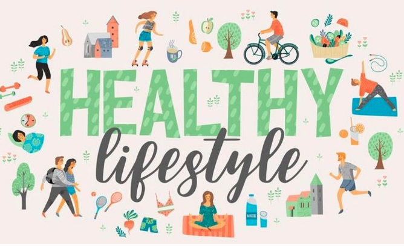
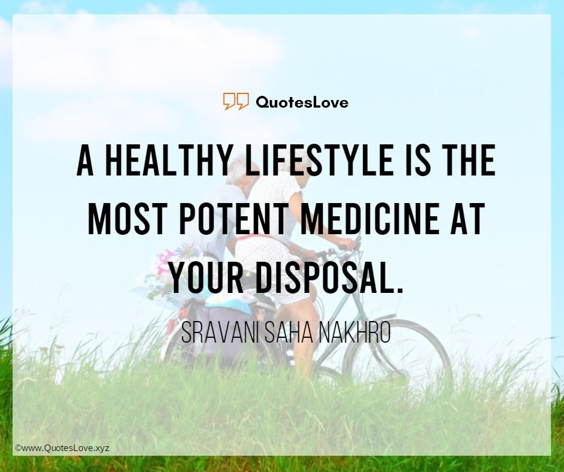
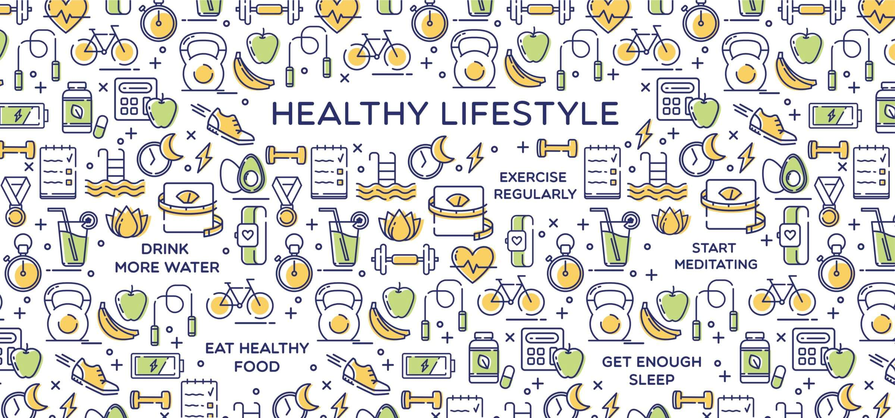
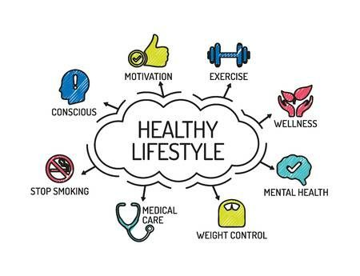

Healthy Lifestyle
Introduction
Good nutrition, daily exercise and adequate sleep are the foundations of healthy
living. A healthy lifestyle keeps
you fit, energetic and at reduced risk for disease. According to WHO, Healthy living is a way of living that
helps
you enjoy more aspects of your life. It is a way of living that lowers the risk of being seriously ill or dying
early. Health is not just about avoiding a disease or illness. It is about physical, mental and social
well-being
too.
When you adopt a healthy lifestyle, you provide a more positive role model for other people in your family,
particularly children. You will also create a better environment for them to grow up in. By helping them to
follow a
healthier lifestyle, you will be contributing to their wellbeing and enjoyment of life now and in the future.
Managing stress in positive ways, instead of through smoking or drinking alcohol, reduces wear and tear on your
body
at the molecular level. For a longer and more comfortable life, you should adopt a healthy life style. Following
factors may affect your lifestyle on regular basis.
Eating
Your heart, muscles, bones, immune system and other body systems depend on a
continual supply of nutrients for cell
growth and metabolism. You need to eat varied diet to get essential nutrients in the form of protein, vitamins,
carbohydrates, minerals and fats. Consume lean meat such as chicken along with legumes, eggs and nuts for
healthy
living. Limit your portion size at meals to control your weight and your risk for cardiovascular and other
diseases
through your lifestyle. If you want to control your weight and reduce the risk of various diseases, you make
sure
that the diet is nutritious, in addition to limiting portion size.
Exercising
Calories accompany the nutrition in food and if you don’t exercise, you’ll gain
weight. Carrying extra weight
increases your risk for heart disease, type 2 diabetes mellitus and cancer. Your lifestyle should support a
constant
healthy weight for normal daily activity. You should always do muscle strengthening exercises, such as weight
lifting, along with aerobic exercises, such as walking or running. You should also include exercise, such as
yoga to
improve body flexibility.
Sleeping
Daily metabolism perpetuates the decline and rejuvenation of cellular tissue and
the body’s self-repair takes place
when you are asleep. Memory consolidation and appetite regulation also occur during this time of reduced
physical
activity. Seven to nine hours of night sleep daily is considered an optimum for most individuals for a healthy
lifestyle.
Reducing Stress
Your body responds to everyday stress with a release of hormones that prepares you
to react.Although some stress is
inevitable and necessary, excess can lead to various health problems.If you don’t relieve this excessively
stressful
state through relaxation, the effects build and can create muscular pain, headaches, sleep disturbances and
other
symptoms. A lifestyle that includes regular stress management, breaks this cycle before it can progress to
unhealthy
levels. You can achieve physical relaxation through stretching, body massage, yoga or enjoyable exercise.
Connect
with friends and family to relieve mental pressures and take time out to read, pursue a hobby or experience
another
activity that makes you feel good.
What are the benefits of a healthy lifestyle?
Do you need some extra motivation to follow a more healthy lifestyle? These
benefits of a
healthy lifestyle may be just what you need to commit to changing your daily habits into healthier ones. And trust
me, once you make those changes and experience their positive effects you won’t want to go back!
1. You’ll improve your physical health
Eating the right foods in combination with physical activity and adequate rest is a recipe for a healthy body.
Find
any form of movement that gives you joy. Perhaps this is hiking a fourteener, taking a yoga class online, lifting
weights at the gym, or simply walking your kids home from school. All forms of movement count towards improving
your
health.
2. You’ll improve your mental health
It’s easy to get caught up in the hustle of work, kids, and other responsibilities, but part of maintaining a
healthy
mind involves taking time to step back and relax. This includes getting adequate sleep, but also taking time for
yourself to do something you love. This might involve taking a walk away from your desk, reading a good book,
taking a
5-minute guided meditation, or playing with your pet. Engaging in these types of activities can decrease your
stress
and improve your overall mental health.
3. You’ll get more energy naturally
Don’t underestimate the power of sleep. Experts suggest that adults need anywhere from 7 to 9 hours of sleep each
night in order to function at their best. Prioritizing sleep while also fueling your body with the right foods can
help you have more energy naturally. This means you won’t have to drink five cups of coffee to feel like a
functioning
human being.
4. You’ll boost your mood
Most people know that eating better is good for your body, but it can be just as helpful for your mind. A healthy
diet including plenty of healthy fats like omega-3s which can reduce depression and decrease mood disorders. Foods
high in omega-3s include fish, especially fatty fish such as salmon, flax seeds, chia seeds, and walnuts.
Physical exercise has also been found to improve your mood by increasing the production of the “feel-good
hormone”, serotonin. Serotonin can keep you emotionally stable and reduce feelings of depression, making physical
activity a great way to boost your mood and live a happier life!
5. You’ll prevent diseases and health issues
Many aspects of a healthy lifestyle can aid in preventing certain diseases and health issues such as obesity,
diabetes, heart disease, and certain cancers. In fact, multiple studies show that engaging in healthy lifestyle
activities can give people a longer life free of chronic diseases. So although many diseases and health issues are
out of our control, we still have the ability to empower ourselves and live a longer, healthier life through the
choices we make.
6. You’ll save money
A healthy lifestyle involves eating nutrient-dense foods that make you feel nourished and satisfied. This is often
accomplished by cooking your meals at home with ingredients on hand. Cooking for yourself can help you save money
by eating out less. Also, as mentioned in benefit #5, a healthy diet may prevent diseases and health issues which
means less trips to the doctor and more money in your pocket!
7. You’ll always have goals to work towards
Achieving a healthy lifestyle involves many aspects of your life–how you eat,how you move your body, and how you
engage in self care activities. Try to improve one area at a time by setting goals. Reaching your goals can help you
feel accomplished and boost your overall self confidence. Be sure to make your goals SMART.
This type of goal setting not only helps improve your health, but is also directly linked to improved workplace
performance.